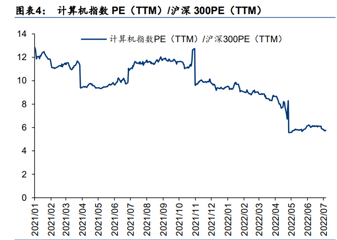
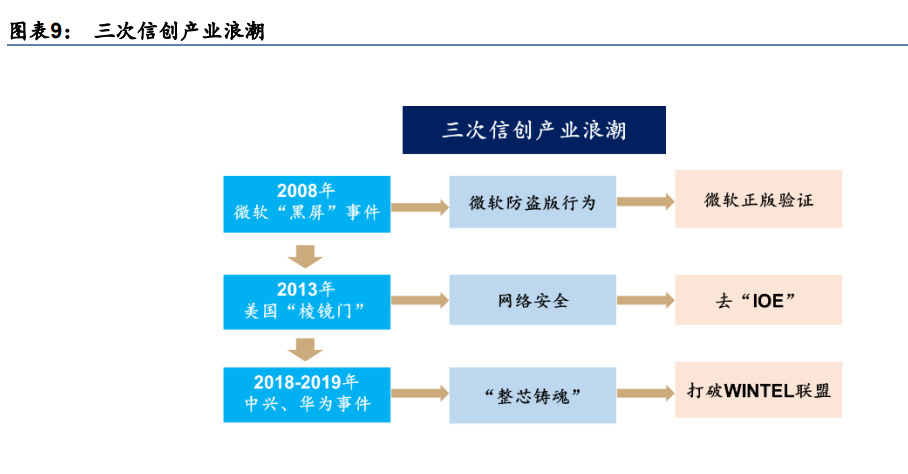
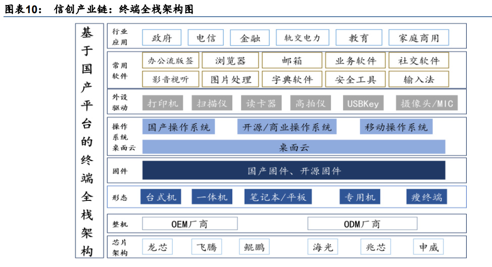
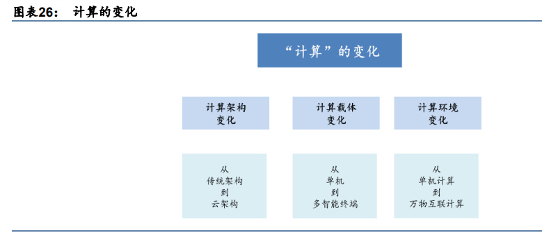
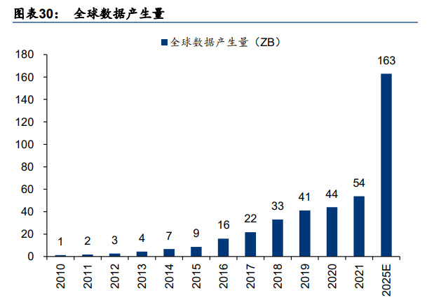
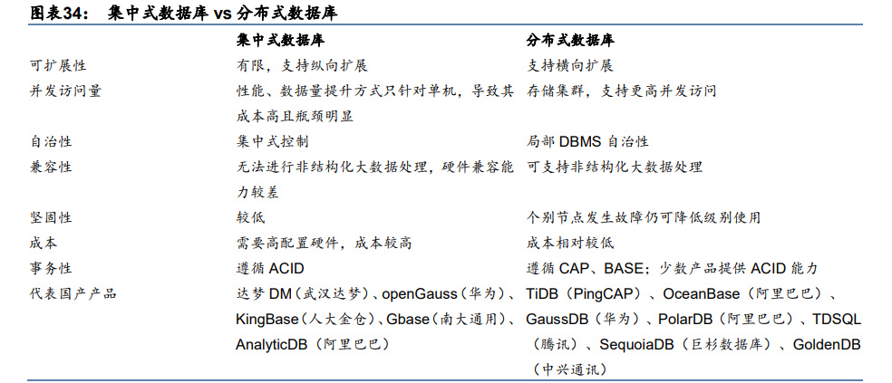

国产软件：信创政策推动下，国产替代可期
2021年计算机软件板块收入增速回升。我们对 180家计算机软件板块上市公司进行了统计， 2021 年软件板块总营收 3793 亿元，同比增长 13.7%，同比增速出现回升。主要原因：2020 年疫情爆发基数较低；2021 年疫情逐步控制，收入有所恢复。22Q1 软件板块总营收 686 亿元，同比增长 9.2%，增速较去年同期有所下滑，主要与今年一季度疫情反复有关。
疫情好转有望带动板块估值修复。绝对估值方面，2021 年初至今计算机行业估值整体呈现 下降趋势，PE（TTM）估值下从 190 倍左右下降至 75 倍左右，PS（TTM）估值下降近一 倍；相对估值方面，计算机指数相对沪深 300 指数的 PE 比值下降明显，2021 年以来历史 最高点超过 12 倍，目前下降至 5 倍左右；PS 比值略有波动，基本在 1.5-2 倍之间浮动。 但自今年 5 月以来，行业估值下滑已趋缓，未来随着疫情好转，计算机板块业绩预计有望 回暖，估值有望修复。

企业端来看，过去一年国产软件新势力层出不穷。随着智能制造与工业互联网的推进，我 国制造业信息化需求不断上升，软件赛道国产玩家持续增多。2021 年 6 月至今，计算机软 件板块新上市公司共 21 家，主营业务范围涵盖建筑信息化、医疗信息化、能源信息化等多 个下游细分领域，覆盖研发设计、生产制造、终端销售等产业全流程。
政策端来看，信创采购等扶植政策出台有望推动软件行业发展。2021 年 11 月，工信部相 继发布工业绿色、软件和信息技术服务业、信息化和工业化融合、大数据产业等“十四五” 发展规划，鼓励软件及相关行业发展的同时，也对绿色发展、产品迭代及技术创新方面提 出了新的要求。12 月，第八届全国人大常委通过《中华人民共和国科学技术进步法》，首次 对政府统筹采购科技创新产品进行规定。国家政策的支持与行业规范新要求的提出，促进 软件行业可持续发展。2022 年，深圳和北京先后出台信创产业扶持政策，其中深圳市发改 委发布的《关于促进消费持续恢复的若干措施》明确指出，新增关键信息基础设施中信创 产品的采购比例，党政机关、国资国企不低于 40%。
国产化替代涉及硬件及软件等层次，从党政试点进一步推广。国产化替代涉及从底层硬 件到应用软件的多个层次，具体来看，硬件层面包括主机及外部设备，具体涉及芯片、 服务器、存储、固件等领域；软件层面包括基础软件及应用软件，具体包括操作系统、 数据库、中间件、办公软件等。从推进节奏看，我国的自主创新起始于党政办公领域， 2018 年开始加速启动，2019 年实现了突飞猛进的发展。我们认为，自 2020 年开始， 我国始于党政及特殊领域、进一步拓展至央企国企乃至关键行业的自主创新替代将迎来 黄金发展期。

国产化节奏正处于从“可用”向“好用”的进化阶段。经过多年的产品研发积累，国产基 础软硬件体系目前已经处于“可用”状态，但相比成熟的 Wintel 体系，国产基础软硬件体 系在产品性能、软件生态、用户使用体验等，以及未来可预见的售后、运维等还面临众多 难题，正处于从“可用”向“好用”的进化阶段。
国产化终极形态或为包含软硬多个层次的生态系统。从 IT 架构的组成看，底层芯片提供了 重要的算力支持，固件则为重要的使用载体，操作系统提供了调度硬件资源，支撑上层应 用的作用，应用软件则是数据生成、沉淀的重要环节。对于自主创新、安全可控的需求贯 穿了各个环节。我们认为，国产化的终极形态将包含 CPU、桌面电脑、服务器等整机硬件 产品和操作系统、数据库、中间件等基础软件产品，办公 office、OA、安全软件等应用产 品以及在此基础上的国产软件集成。

数据库：分布式数据库或成市场新增量
数据库的发展与计算载体紧密相关。数据库是计算机行业的基础核心软件，所有应用软件 的运行和数据处理都要与其进行数据交互。数据库的开发难度，不仅体现在与其他基础器 件的适配，更在于如何实现对数据高效、稳定、持续的管理。从数据库的发展历程来看， 计算架构的变化，计算载体的变化、计算场景的变化，以及计算数据格式的变化都对数据 库的发展带来的一定的影响。或者说，在以上计算环境变化下，其需要的数据库类型也发 生了变化。 从计算载体来看，数据的计算从原来的大型机、到小型机、个人电脑 PC、互联网、移动互 联网、云计算，以及未来更多终端的物联网智能终端。计算的载体更加多样化。 从计算场景来看，数据计算也从单独的单机计算，到互联网多群体交互的联网计算和云计 算，以及万物互联的高并发、低时延的物联网计算。 从计算架构来看，传统的 IT 架构也正逐步向云架构迁移。传统的 IT 架构从 C-S 架构逐步 发展到了 B-S 架构，而目前的云原生、分布式计算架构正对传统计算架构带来深刻变革。 而新的计算架构也对计算的基础软件（操作系统、数据库、芯片等）提出更高的需求。
在以上计算环境的变化下，我们看到，联网的数据也在发生深刻变化。 数据的大小。目前联网数据量也在高速增长。通信技术的发展带动从 2G 到 3G、4G、5G 的演进，每代通信技术之间，联网的数据规模也呈现（几个）数量级的增加。对大容量、 高性能计算提出更高要求。 数据的类型。计算场景的演变，我们对数据的定义也在发生变化。图片、语音、视频等非 结构化数据成为增量数据的主要类型。联网的数据类型也逐步从原来的结构化数据到非结 构化数据演变，这就对计算的并发性提出了更高的要求。 数据的快慢。对数据的高速计算是计算机一直以来的追求。但原有的 IT 架构下，计算速度 的提升存在一定的物理条件限制。经典的 IT 架构已经存在了几十年的历史，当时的 IT 架构 并没有完全考虑到目前计算场景的变化。因此，新的计算场景下，对数据高速计算的追求， 需要我们从底层基础软件的变革开始。我们看到无论芯片、操作系统还是数据库，都在经 历深刻变革。

在以上计算和数据多个维度变化的情况下，我们认为，数据库行业也正在经历历史演进的 深刻变革。在传统计算环境和数据类型方面，传统数据库依然发挥比较重要的作用。但在 面向未来新的计算场景方面，我们需要的可能是新型的数据库产品。这种新型数据库，是 计算架构迁移、计算载体演进以及计算环境变化之后的产物；同时，也是数据规模大幅增 加，数据结构变化之后所需要的产品。
全球关系型数据库市场增速渐趋平稳。数据库诞生于上世纪 60 年代，传统的数据库产品面 临的是以事务型、交易处理为主的任务，事务支持性能较好的关系型数据库如 Oracle、DB2 迅速兴起。而近年来，传统的关系型数据库市场增长渐趋平稳，据 Gartner，2021 全球数 据库管理系统（DBMS）市场规模达 800 亿美元，同比增长 22.3%，增速达到近十年峰值。 但关系型数据库市场增长渐趋平缓，据 T4.ai 预测，全球关系型数据库市场规模 2018-2022E CAGR 为 6%。 数据量上升催生分析需求，数据库市场新机遇显现。随着智能移动手机的普及及云计算的 兴起，全球数据产生量不断上升，从 2010 年的 1.2ZB 上升至 2021 年的 54ZB。未来几年 内随着各类智能物联设备的推广以及云计算的进一步应用，数据量有望进一步上升。随着 数据量上升，大数据分析的需求逐步显现，传统的关系型数据库在高并发、分析等方面存 在一定的劣势，应运而生的分布式数据库能够较好的满足大数据分析的需求，或形成数据 库市场新的增量。

国产数据库技术路线
国产数据库厂商的技术路线，按照数据库存储数据方式的不同分为关系型和非关系型两条 路线，按照不同的系统架构分为集中式和分布式两类，按照数据库应用类型的不同还可以 分为 OLTP、OLAP、HTAP。
关系型数据库 vs 非关系型数据库。根据数据存储结构区分，可以分为关系型数据库、非关 系型数据库，其中非关系型数据库根据存储方式又可以分为键值数据库、列数据库、文档 数据库、图数据库等。非关系型数据库在读写性能、扩展性上具有一定的优势，因此较适 应大数据、高并发等场景，而关系型数据库具备强一致性，遵循 ACID 原则，因此在事务支 持中具备优势。
集中式数据库 vs 分布式数据库。根据系统架构分，可以分为集中式数据库、分布式数据库。 分布式数据库在可扩展性、高并发支持方面具有优势，集中式数据库在事务性支持上遵循 ACID 原则，在事务支持上具备优势。分布式数据库的优劣势与非关系型数据库类似，而近 年来，分布式数据库不断发展，在提供高弹性、支持高并发的同时，与关系型数据库强事 务性支持的特性进一步结合。

OLTP vs OLAP vs HTAP：按照数据库的应用类型，可以分为 OLTP（事务型数据库）、OLAP （分析型数据库）以及 HTAP（混合事务分析处理），OLTP 主要针对实时数据，关注最近 一段时间的数据，响应及时性要求很高，常见的事务型数据库有 Mysql、MangoDB 等。OLAP 主要用于在大量数据中分析规律的，通过查询分析规律趋势，用于产品决策等。随着时间 的推移，演进出了混合 OLTP 和 OLAP 的 HTAP（混合事务分析处理），其既可以应用于事 务型数据库场景，亦可以应用于分析型数据库场景。